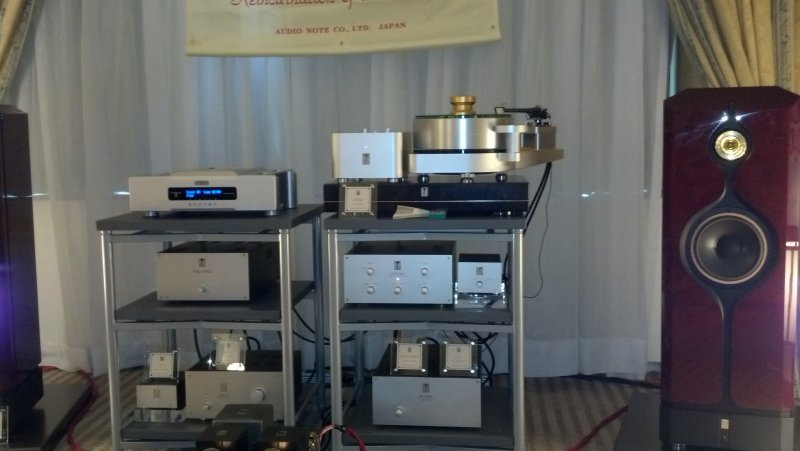
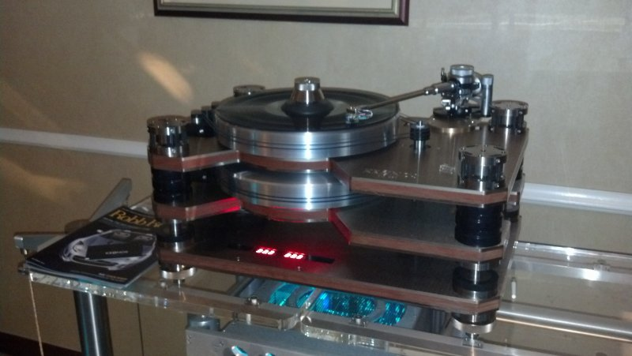
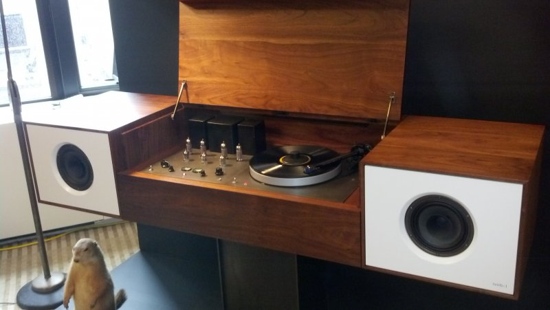

By Alan Shulman
So I attended my first audio show. If you're not familiar with the concept, it's typically a weekend event housed in a swanky hotel where dealers, distributors, designers and manufacturers of high end audio equipment gather to show off their latest innovations in sound reproduction to a gathering of audiophiles, amateur to professional. I'm distinctly of the amateur variety, a peruser of magazines like Sterophile and Absolute Sound, who resolutely remained perplexed at 90% of the things the proud presenters of all this gear were telling me. On the other hand, I've invested what for me is a considerable sum in my vinyl rig, or kit as you Brits like to say, and I'm genuinely interested in the science behind what we hear, or what we think we hear. So while I was definitely the outsider, not being a member of the typical audio press, and consequently on the receiving end of the occasional quizzical look, I was also the proverbial pig in shit (which proverb that pig comes from escapes me at the moment). Because this was no ordinary stereo equipment I was surveying, sauntering room to room at the New York Palace Hotel, a hotel I might add that, with its elevator attendants, gilt decorations and convenient midtown location, struck me immediately as somewhat out of my reach. The elusiveness of these luxury accommodations were simply a metaphor for the gear I was about to hear.
Want to know what a $95,000 turntable looks like?

That table was manufactured, or should I say sculpted, by a Japanese company called Kondo. And clearly you and I will never own one. The speaker cables used in this setup cost more than any single component in my system, a fact about which I don't know whether to laugh or cry. How does it sound? I'm no audio engineer, but I would describe it as fucking incredible. It's at this point you realize that dumping a couple grand into a system, calibrating it carefully and treating your records well, only gets you so far. Most of you are probably choking on that "couple grand" since normal people usually have to scrape together the few hundred bucks it takes to score an iPod, and I am among them. But over time I've been able to invest and build my system from lightly used gear to the point where I'm relatively happy with the sound for the critical listening I do regularly. It's not that these efforts are for naught, it's just when you stand in a hotel corridor, and hear a woman singing with a small jazz band in the room around the bend, then upon entering, you realize the women is being sourced from a standard Redbook cd, played through a hundred grand worth of sparkling new amps and speakers, you realize you are now breathing the rarefied air set aside for the beneficiaries of the economic bifurcation that is slowly turning the United States into a moderately privileged banana republic. If I could describe the sound figuratively I'd say it was the difference between being involved in the music and being enveloped by it. And speaking of enveloped...

This table by Kronos (and presented by dealer Audio Doctor) starts at a modest $32,000, and was also a wonder to behold, as I sampled Paul Simon's Graceland on it, hearing the LP come alive as I never have before. It has a unique reverse plynth which basically runs the opposite direction of the one on top in order to offset vibration caused by physical stresses. Sure, it was run through about $150,000 in amps and speakers, but hey, you have to find your bargains where you can. I'm being a little bit arch about all this stuff, but I have to tell you it was a truly wonderful experience sitting down in front of these rigs and losing myself in the music. I just wish this kind of transcendence was a little more in reach to the average consumer. If we could spread the word a bit and bring back the days when hifi was a popular hobby, and people actually sat down and really listened to music, maybe we can get some real mass production going on some top gear and bring those prices way down.

On the not so absurdly expensive but still out of reach side of things was this stellar piece of audio furniture, reminding me of the old console my grandmother had in her house that took up half a wall. It wasn't the first word in sound, but it looked amazing and was a fully integrated digital/analog playback system for $26,000. I also chanced upon legendary vinyl guru Michael Fremer checking out this piece of equipment which he features on his great website, Analog Planet.
There was much else to absorb and gawk at and there's a bunch I wish I could describe to you in words. I'll just say that if you're an audio junkie, or think you'd like to be one, you owe it to yourself to check out one of these shows if the opportunity presents itself. And who knows, one day you may win the lottery, run a Fortune 500 corporation, or become a major kingpin in the Russian mafia, and all of this could be yours.
23 April, 2013 - 17:39 — Alan Shulman